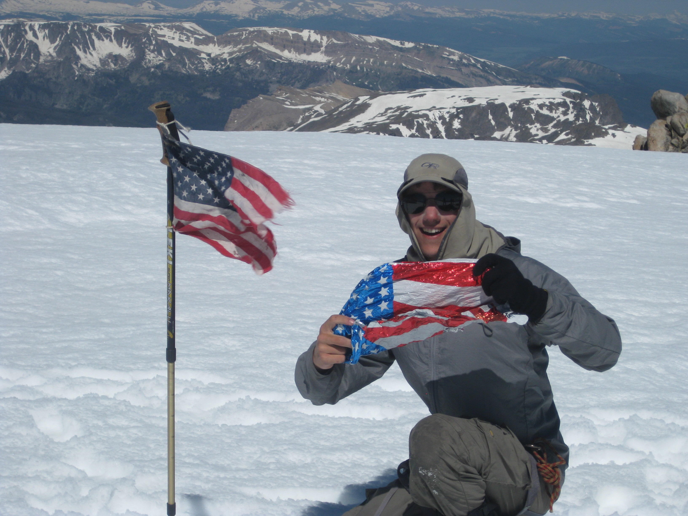
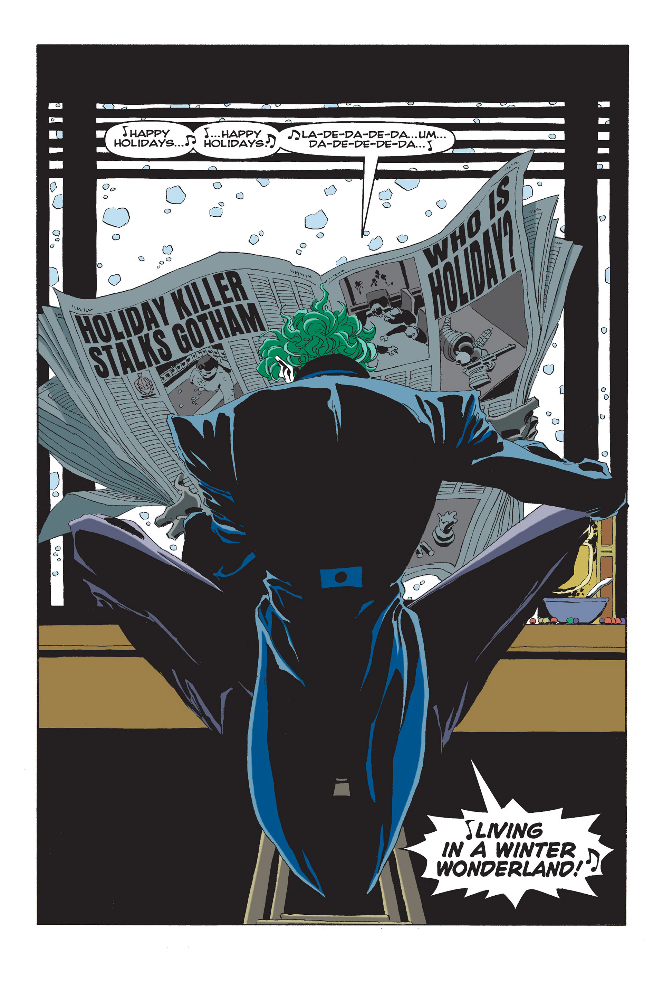

Home
My Interests
This is a breif insight into some of my passions.
-
https://www.youtube.com/watch?v=c26hIle6lKY
The main theme from one of my favorite movies of all time, the 2010 remake of True Grit.
-
https://tunein.com/radio/La-Tricolor-965-s26541/
The TuneIn radio page for one of my favorite radio stations: 96.5 KXPK Denver, El Tri Color. It is a Mexican radio station where I keep up with all of the best new Latin music (even though I do not speak spanish...).
-
https://anotsowellrespectedman.wordpress.com/
A link to my blog. This is something I started one weekday evening when I was bored in College. I have not amassed much of an article catalog, but it is a small insight into the types of things I enjoy writing about.
-
https://www.stmarys.ac.uk/home.aspx?filtered=1
This is a link to the website for the University where I studied abroad in southeast Greater London.
-
https://www.nols.edu/en/
This is a link to the website for the National Outdoor Leadership School (NOLS). This is a wilderness program that teaches equal parts leadership skills and outdoor education. I completed a month-long backcountry mountaineering course the summer after my sophomore year in college.
Favorites
Here are some of my favorite images. They are a mix of images that I love in and of themselves, and some that represent my passions.

Here I am on the Fourth of July, 2014 on top of a mountain called Klondie Peak in the Wind River Range of Wyoming. This particular peak is located on the continental divide so you have an enormous field of view to both the east and west. Taken during my NOLS expedition.

This is an eerie image of the Joker from one of my favorite comic book storylines, Batman: The Long Halloween. I feel like the art of animation in comic books is something that can often make or break the quality of the story itself.

This is a scene from one of my favorite movies of all time, The Princess Bride.

Phil Ford. In my opinion the best college basketball point guard of all time. I am a North Carolina Tar Heel fan born, bred, and eventaully dead.

Born and raised in the same region of the United States as I was, Bruce Springsteen music has always naturally resonated with me.